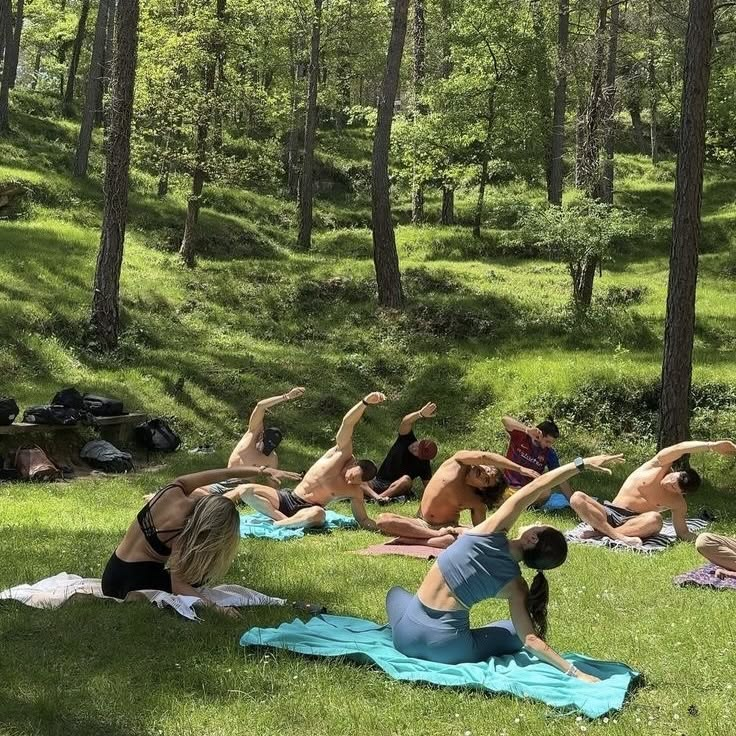
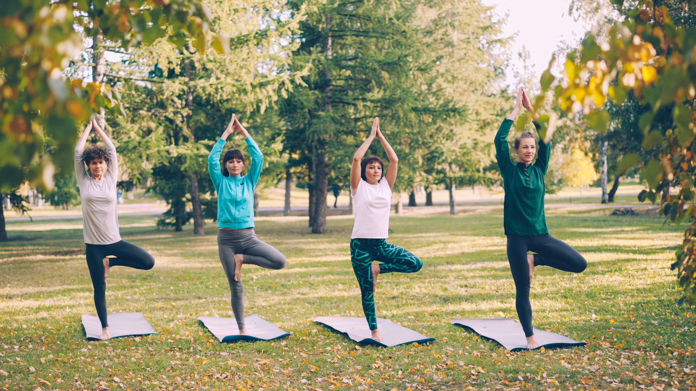
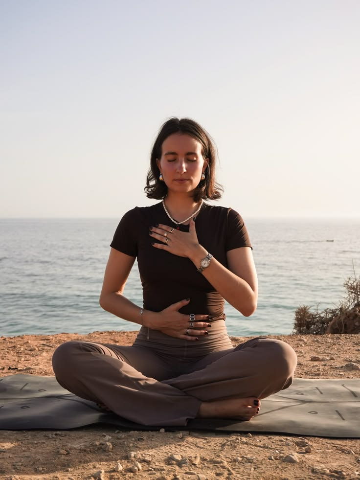
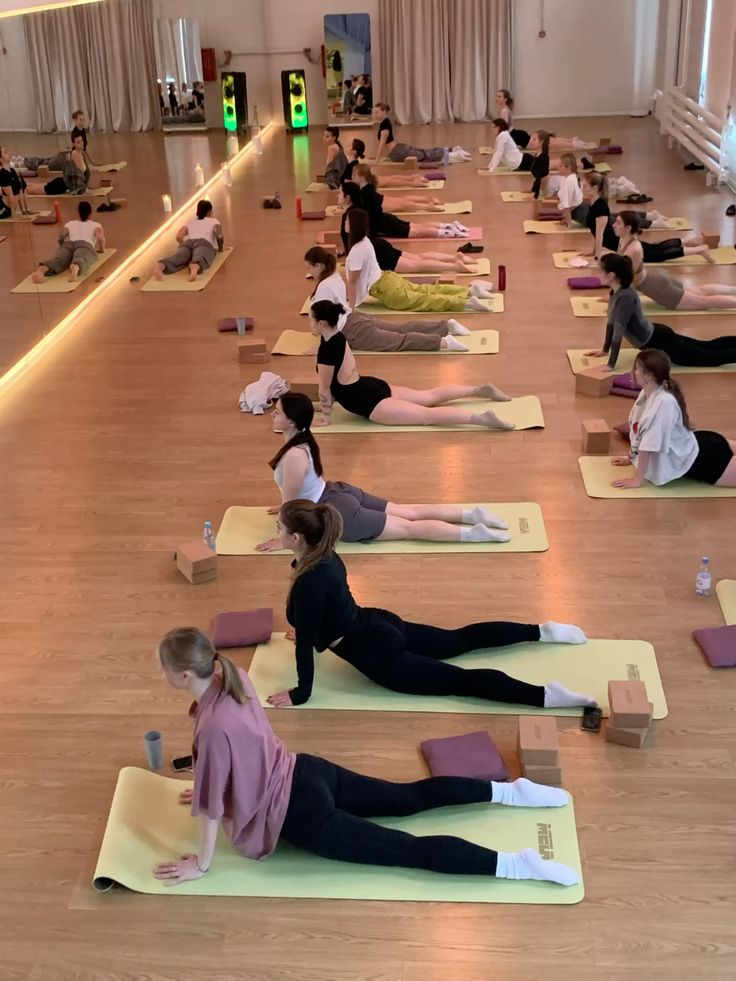
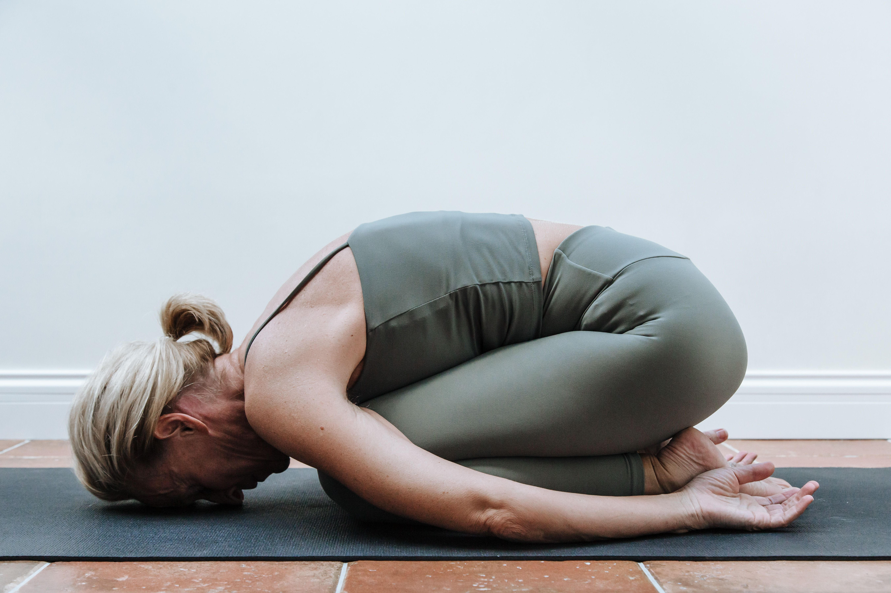
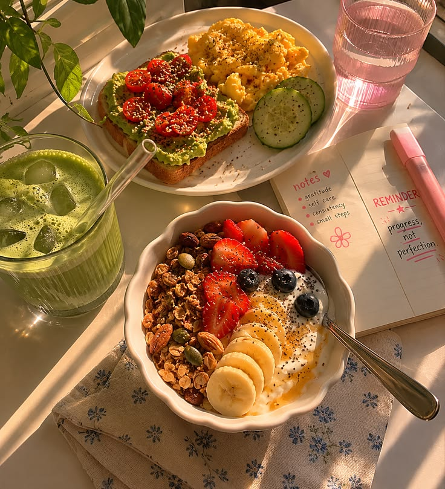

Blog & Meditație
Articole inspirate și timer pentru meditație ghidată

5 Sfaturi pentru o Meditație Zilnică
Publicat: 15 martie 2026
Începe-ți ziua cu 5 minute de liniște. Găsește-ți un loc confortabil, respiră adânc și observă-ți gândurile fără a le judeca. Meditația zilnică reduce stresul, îmbunătățește concentrarea și aduce claritate mentală.
Citește mai mult →
Cum să Integrezi Yoga în Rutina Zilnică
Publicat: 10 martie 2026
Chiar și 10 minute de yoga pe zi pot transforma starea ta de bine. Începe cu câteva posturi simple și respiră conștient. Descoperă cum poți să îți creezi un ritual matinal care să îți aducă echilibru.
Citește mai mult →
Cele mai bune posturi pentru începători
Publicat: 5 martie 2026
Posturile de bază precum Copilul, Câinele cu fața în jos și Războinicul sunt esențiale pentru orice începător. Acestea construiesc forță, flexibilitate și încredere în practica ta.
Citește mai mult →
Mindfulness în viața de zi cu zi
Publicat: 28 februarie 2026
Mindfulness nu înseamnă doar meditație pe pernă. Învață cum să fii prezent în fiecare moment: când mănânci, mergi sau asculți pe cineva. Trăiește fiecare clipă cu intenție.
Citește mai mult →
Tehnici de Respirație (Pranayama)
Publicat: 20 februarie 2026
Respirația este sufletul yoga. Învață tehnici precum Ujjayi, Kapalabhati și Nadi Shodhana pentru a-ți calma mintea și a-ți energiza corpul.
Citește mai mult →
Nutriție pentru Yoghini: Ce să mănânci pentru energie
Publicat: 15 februarie 2026
Alimentația joacă un rol crucial în practica yoga. Descoperă alimentele care îți susțin energia, flexibilitatea și claritatea mentală. O dietă bazată pe plante și alimente integrale este cheia.
Citește mai mult →